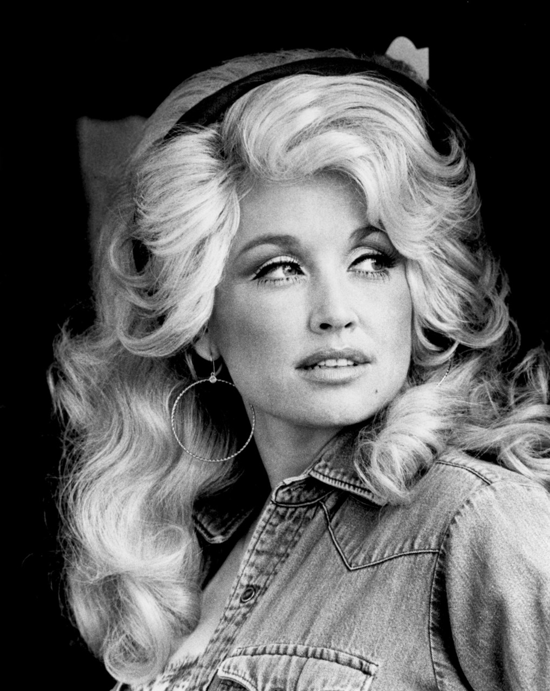

Who is She?
Dolly Rebecca Parton is an American singer-songwriter, actress, author, businesswoman, and humanitarian, known primarily for her work in country music. Parton is the most honored female country performer of all time. Achieving 25 RIAA certified gold, platinum, and multi-platinum awards, she has had 25 songs reach No. 1 on the Billboard Country charts, a record for a female artist. She has 41 career top 10 country albums, a record for any artist, and she has 110 career charted singles over the past 40 years.